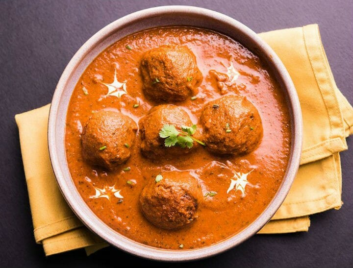

Malai Kofta
Malai Kofta is a rich blend of a few selected spices and cream..
Preparation time
- Total: Approximately 30 minutes
- Preparation: 25 minutes
Ingredients
- 8 nos Potatoes boiled
- 200 g Paneer. 5 to 6 nos Onions finely chopped. 1 cup Oil. 2 inch Cinnamon
- 200 g Khoya dried
- as per taste Salt. 5 to 6 nos Cardamoms. 4 to 5 nos Cloves. 1 tsp Ginger Paste. 1 tsp Garlic Paste
- 15 to 20 nos Sultanas
- 1 no Onion finely chopped and fried brown
- 4 nos Green Chillies. 1 tsp Coriander Powder. 50 g Poppy Seeds ground
- 350 to 400 g Besan Flour. 4 nos Tomatoes chopped
- 2 cups Curd, 1 to 2 bunch Coriander Leaves, as required Oil
Instructions
- step1: Peel and mash the potatoes. Add paneer, khoya, salt, sultanas, onions and chillies. Mix well.
- step2: Shape into small balls. Mix the gram flour with little water to make a batter. Dip the balls in the batter. Heat oil in a pan.
- step3: Deep fry the balls on medium heat till cooked. Remove and keep aside. To make the gravy, heat oil in a pan. Add the onions and fry till brown.
- step4: Add cinnamon, cardamom and cloves. Fry for 30 seconds. Add the rest of the ingredients and cook over low flame..
- step5(enjoy): To serve, pour the gravy over the koftas or drop them into the gravy. Garnish with cream and coriander leaves. Serve hot
Nutrition
The table below shows nutritional values per serving without the additional fillings.
| Calories | 330kcal |
|---|---|
| Carbs | 50g |
| Protein | 18g |
| Fat | 7g |